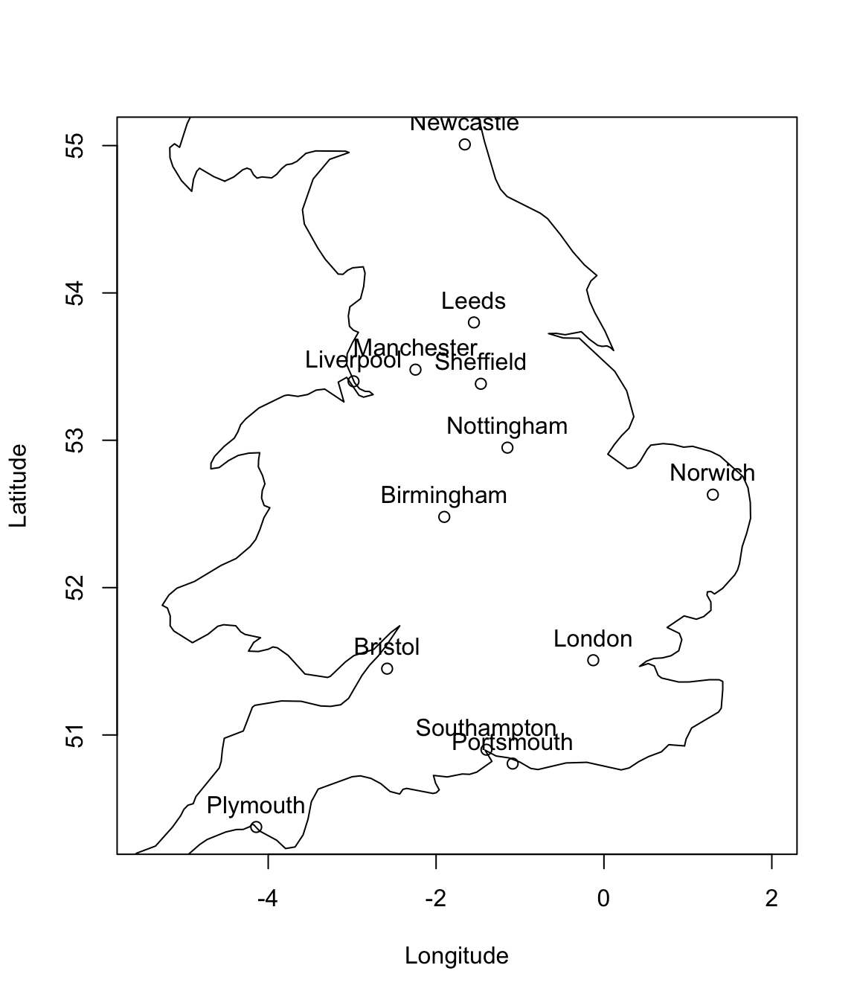

Chapter 2 Multidimensional Scaling (MDS)
In PCA, we start with \(n\) data points \(\mathbf x_i \in \mathbb{R}^p\), and then try to find a low dimensional projection of these points, e.g., \(\mathbf y_1, \ldots, \mathbf y_n \in \mathbb{R}^r\) with \(r<p\), in such a way that they minimize the reconstruction error (or maximize the variance).
The focus in Multidimensional Scaling (MDS) is somewhat different. Instead of being given the data \(\mathbf X\), our starting point is often a matrix of distances or dissimilarities between the data points, \(\mathbf D\). For example, if we have data on \(n\) different experimental units, then we would be given the distances \(d_{ij}\) between any pair of experimental units \(i\) and \(j\). We compile these into a \(n\times n\) distance matrix \(\mathbf D=(d_{ij}: \, i,j=1, \ldots , n)\).
The goal of MDS is to find a set of points in a low-dimensional Euclidean space \(\mathbb{R}^r\), usually \(\mathbb{R}\) or \(\mathbb{R}^2\), whose inter-point distances (or dissimilarities) are as close as possible to the \(d_{ij}\). That is, we want to find \(\mathbf y_1, \ldots, \mathbf y_n \in \mathbb{R}^r\) whose distance matrix is approximately \(\mathbf D\), i.e., for which \[\operatorname{distance}(\mathbf y_i, \mathbf y_j) \approx d_{ij}.\]
If we define the errors in terms of a square distane, then we can write the goal of MDS as the following optimization problem: \[\begin{align} \mbox{Find} \quad& \mathbf y_1, \ldots, \mathbf y_k \in \mathbb{R}^r\\ \mbox{to minimize} \quad &\sum_{i=1}^n \sum_{j=1}^n (d_{ij} - d(\mathbf y_i, \mathbf y_j))^2. \end{align}\]
As an illustrative example, consider the location of some of England’s cities.

If we are told their latitude and longitude, it is easy to calculate the distances between the cities.
| London | Birmingham | Manchester | Leeds | Newcastle | Liverpool | Portsmouth | Southampton | Nottingham | Bristol | Sheffield | Norwich | Plymouth | |
|---|---|---|---|---|---|---|---|---|---|---|---|---|---|
| London | 0 | 163 | 262 | 273 | 403 | 286 | 103 | 112 | 175 | 170 | 228 | 159 | 308 |
| Birmingham | 163 | 0 | 114 | 149 | 282 | 125 | 195 | 179 | 73 | 124 | 105 | 217 | 281 |
| Manchester | 262 | 114 | 0 | 58 | 174 | 50 | 308 | 293 | 94 | 227 | 53 | 255 | 369 |
| Leeds | 273 | 149 | 58 | 0 | 135 | 105 | 335 | 323 | 98 | 271 | 47 | 230 | 420 |
| Newcastle | 403 | 282 | 174 | 135 | 0 | 199 | 469 | 458 | 231 | 401 | 181 | 328 | 542 |
| Liverpool | 286 | 125 | 50 | 105 | 199 | 0 | 317 | 299 | 132 | 219 | 101 | 299 | 346 |
| Portsmouth | 103 | 195 | 308 | 335 | 469 | 317 | 0 | 24 | 239 | 127 | 288 | 261 | 221 |
| Southampton | 112 | 179 | 293 | 323 | 458 | 299 | 24 | 0 | 229 | 103 | 276 | 268 | 202 |
| Nottingham | 175 | 73 | 94 | 98 | 231 | 132 | 239 | 229 | 0 | 193 | 53 | 169 | 353 |
| Bristol | 170 | 124 | 227 | 271 | 401 | 219 | 127 | 103 | 193 | 0 | 228 | 296 | 162 |
| Sheffield | 228 | 105 | 53 | 47 | 181 | 101 | 288 | 276 | 53 | 228 | 0 | 203 | 382 |
| Norwich | 159 | 217 | 255 | 230 | 328 | 299 | 261 | 268 | 169 | 296 | 203 | 0 | 453 |
| Plymouth | 308 | 281 | 369 | 420 | 542 | 346 | 221 | 202 | 353 | 162 | 382 | 453 | 0 |
But can we do the reverse and reconstruct the map from the distance matrix? This is the aim of multidimensional scaling. MDS constructs a set of points that have distances between them given by the distance matrix \(\mathbf D\). In other words, it creates a map with a set of coordinates for which the distances between points are approximately the same as in the real data.
Of course, this illustrative example is not very interesting, as the original data (the city locations) are only two-dimensional, but in problems with high dimensional data, finding a way to represent the points in a low-dimensional space will make visualization and statistical analysis easier. We shall also see, perhaps unsurprisingly, that there is a close connection between MDS and PCA.
Notation
Definition 2.1 The \(n \times n\) matrix \(\mathbf D=(d_{ij})_{i,j=1}^n\) is a distance matrix (sometimes called a dissimilarity matrix) if
- \(d_{ij}\geq 0\) for all \(i, j=1,\ldots,n\).
- \(d_{ii}=0\) for \(i=1,\ldots, n\) and
- \(\mathbf D=\mathbf D^\top\), i.e., \(\mathbf D\) is symmetric (\(d_{ij}=d_{ji}\)).
- \(d_{ij}=0\) implies \(\mathbf x_i=\mathbf x_j\) DO I NEED THIS??????????? MDS STARTS WITH D- there is no x.
We do not require distances to necessarily satisfy the triangle inequality \[\begin{equation} d_{ik} \leq d_{ij}+d_{jk}. \tag{2.1} \end{equation}\] A distance function which always satisfies the triangle inequality is called a metric distance or just a metric. A distance function which does not always satisfy the triangle inequality is called a non-metric distance.